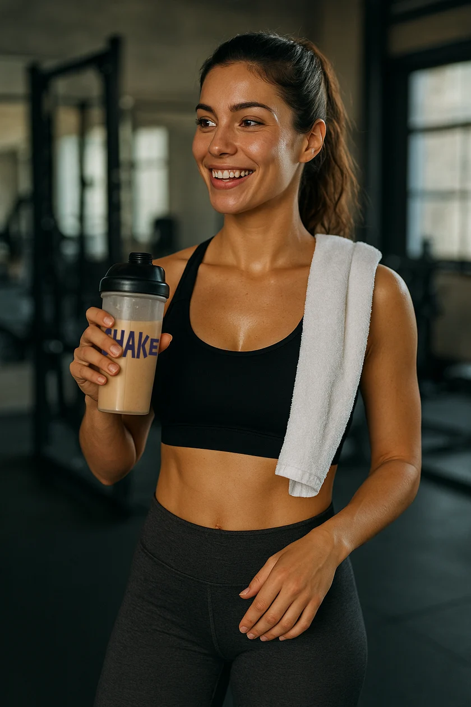

Milkshake proteico in brick
Proteine,
con più gusto.
Hai appena finito di allenarti e ti va qualcosa di buono? Fruit & Protein porta 20 g di proteine in un brick da bere, dal gusto del latte alle varianti alla frutta.
Scopri come nasce l’ideaCosa cerchi nel tuo spuntino?
Abbiamo pensato Fruit & Protein per quei momenti in cui vuoi qualcosa di pratico, ma il gusto conta.
Ecco le nostre soluzioniVuoi uno spuntino dopo l’allenamento?
Ogni brick contiene 20 g di proteine. Lo porti con te e lo apri quando hai voglia di uno spuntino.
Ti va un gusto alla frutta?
La dolcezza della banana, la fragola, la nota più intensa del mirtillo e quella più acidula del kiwi danno quattro caratteri diversi alla linea.
Preferisci il sapore semplice del latte?
Il Classico è il punto di partenza della linea. È il gusto più delicato, pensato per chi preferisce un milkshake al latte.
Scegli il tuo gusto
20 g di proteine per brick
Classico
Un milkshake dal gusto morbido del latte. Il Classico mette al centro la cremosità e un finale delicato.

Tra un allenamento e il resto della giornata.
Lo zaino è già pronto? Aggiungi il gusto che ti va oggi. Il formato in brick accompagna una pausa dopo lo sport o uno spuntino fuori casa.
Torna ai gusti